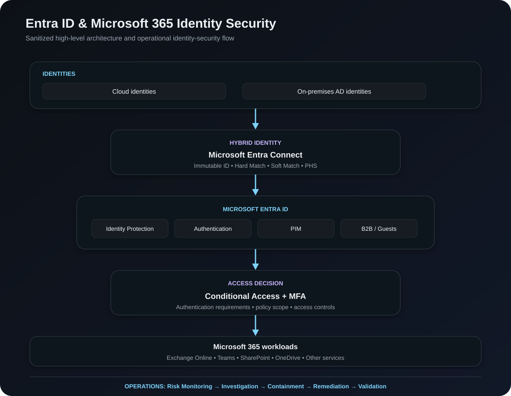

A practical identity-security case study covering authentication hardening, Conditional Access, MFA, identity-risk monitoring, compromised-account response, privileged access and hybrid identity operations.
The environment included cloud identities and users synchronized from on-premises Active Directory. The objective was to strengthen authentication and access controls while creating a repeatable process for detecting suspicious activity, investigating identity risk and responding to compromised accounts.
The design separates identity synchronization, identity protection, access decisions and Microsoft 365 workloads, with security operations running across the entire lifecycle.

MFA enforcement was strengthened using Microsoft authentication capabilities while considering existing authentication methods and user impact during rollout.
Goal: strong authentication without unnecessarily disrupting legitimate users.
Microsoft Entra Identity Protection and sign-in information were used to investigate potentially suspicious authentication activity.
Identify a risky sign-in or suspicious authentication indicator.
Examine authentication context and available identity-risk information.
Determine whether the activity is legitimate, expected or suspicious.
Take appropriate account-security actions and address identified authentication risks.
Review subsequent sign-in activity and confirm the account has returned to a secure state.
Review suspicious sign-ins, authentication activity and available security indicators to determine whether an account may have been compromised.
Apply appropriate account-security actions, address authentication credentials or methods, and remove identified security gaps.
Review subsequent activity and confirm that the account is behaving normally after remediation.
Use the same structured approach for future incidents rather than treating compromised accounts as isolated events.
Microsoft Entra PIM was used to support privileged-access management and reduce unnecessary standing administrative access.
Hybrid identity operations covered Active Directory, Entra Connect, object synchronization and identity matching.
External identities and collaboration access were reviewed so guest users retained only the access required for legitimate business collaboration.
The controls were supported by recurring operational activities rather than treated as a one-time configuration exercise.